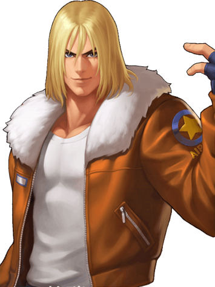

BILL
Historia
Bill nasceu numa vila afastada da Noruega que se sustenta pela caça e essa vila tambem é adoradora do Deus Thor , nessa vila Bill e mais alguns outros são responsaveis pela caça e coleta de suprimento, num dia de caça rotineira eles se deparam com uma fera que nunca tinham visto antes correndo eu suas direções matando todos enquanto fugiam deixando o Bill por ultimo e o arremeca em uma estatua do Thor e acaba desmaiando , e quando acorda ele não ve mais o bicho desperado ele corre para a vila , chegando la ele conta o ocorrido para todos apos isso ele aconselhado pelo lider da vila a descansar e assimilar o ocorrido, depois de seguir os conselhos do lider ele volta pra falar com ele pedindo respostas mas ele so recebe uma carta e uma mochila e o lider fala pra ele ir pra academia treinar e que não precisaria se preocupar com a vila e que era pra ele focar nos estudos.
Pacto: Thor
Status
- Hp: 17
- Força: 2
- Destreza: 1
- Conhecimento: 2
- Carisma: 0
Habilidades
- ????
- ????
- ????
- ????